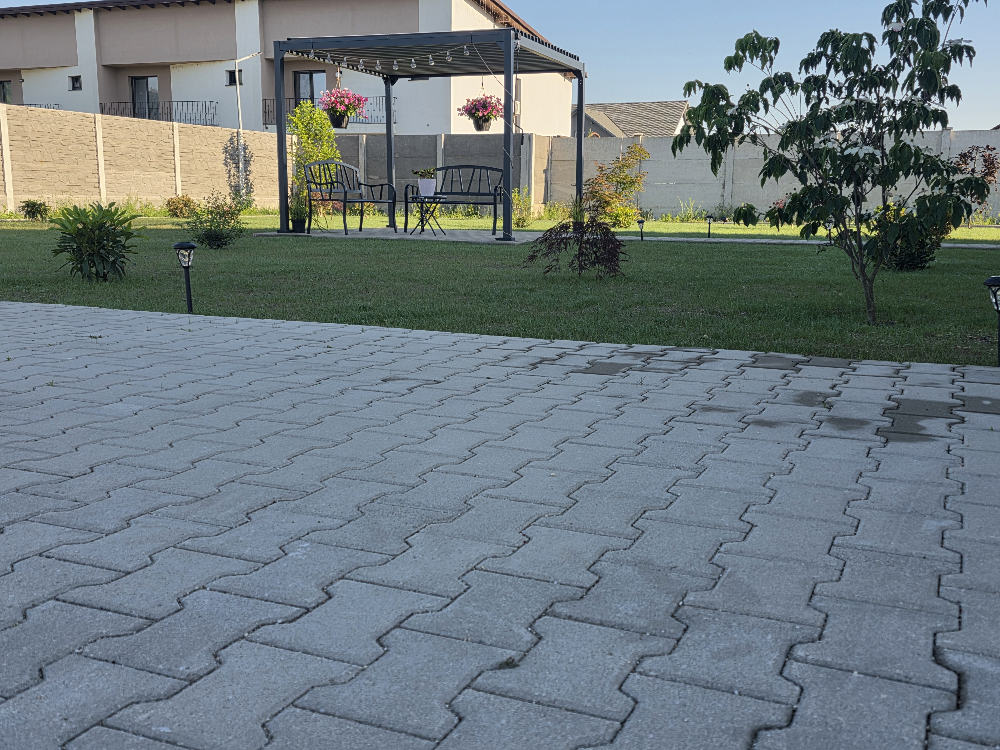
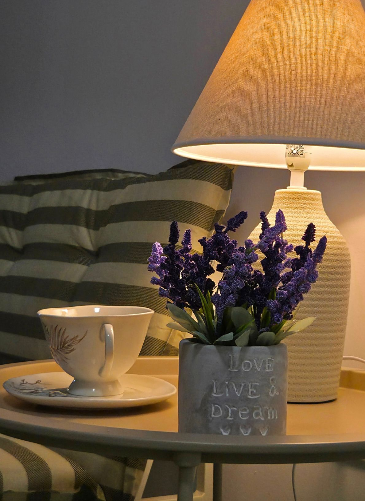
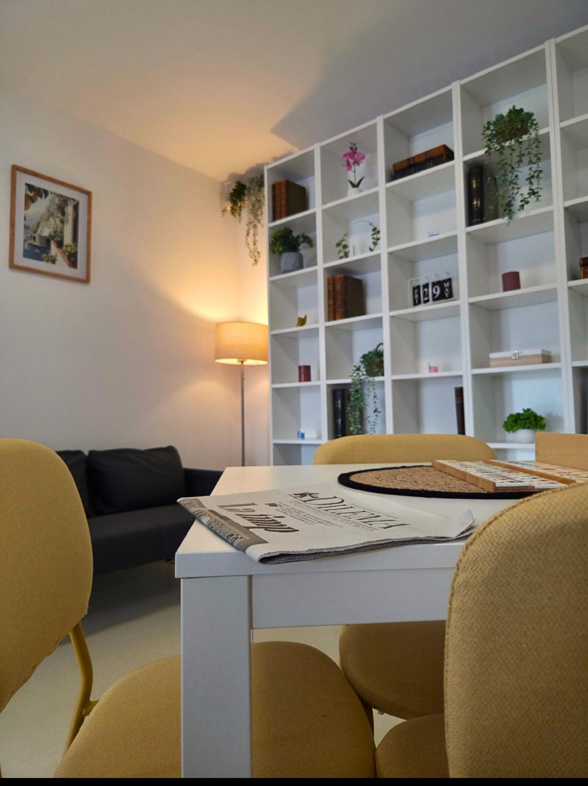
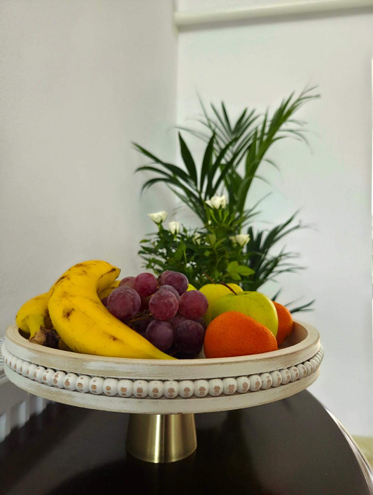
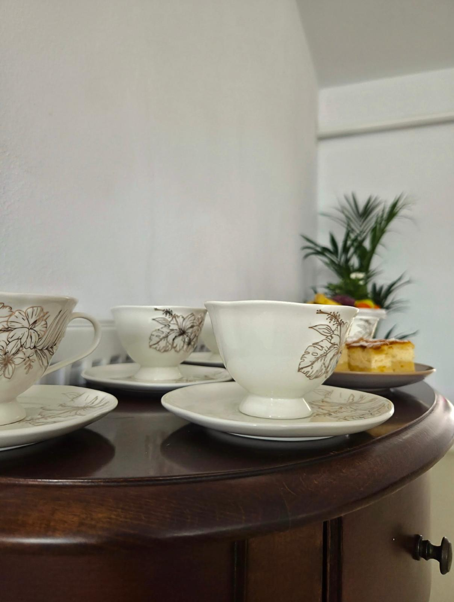

Rezidența Seniorilor
Sfântul Laurențiu
Un loc creat pentru seniori, unde îngrijirea profesionistă, siguranța și confortul se întâlnesc cu respectul, căldura și sentimentul de acasă.
Un loc pe care l-am alege pentru propria familie
Rezidența Seniorilor Sfântul Laurențiu a fost gândită ca o alternativă modernă la imaginea clasică a unui cămin pentru persoane vârstnice.
Punem persoana în centrul fiecărei decizii. Fiecare senior are propria poveste, propriul ritm, propriile nevoi și propriile preferințe.
De aceea, îngrijirea este adaptată gradului de autonomie, stării de sănătate și nevoilor individuale ale fiecărui rezident.
Nu am construit un azil. Am construit un loc pe care l-am alege pentru familia noastră.
Tot ceea ce contează pentru o viață în siguranță
Îngrijire personalizată, confort și sprijin permanent, într-un mediu conceput special pentru seniori.
Îngrijire 24/7
Personal dedicat și supraveghere continuă, adaptate gradului de dependență al fiecărui senior.
Asistență medicală
Monitorizarea stării generale, administrarea tratamentului conform recomandărilor medicale și urmărirea parametrilor de sănătate.
Camere moderne
Camere single și duble, baie proprie și dotări adaptate confortului și siguranței persoanelor vârstnice.
Kinetoterapie
Programe de mobilizare, exerciții și activități adaptate capacității funcționale a fiecărui rezident.
Activități zilnice
Socializare, stimulare cognitivă, activități recreative, plimbări și momente de relaxare.
Alimentație atentă
Mese pregătite cu grijă, meniuri variate și adaptarea alimentației acolo unde situația o impune.
O rezidență construită în jurul nevoilor seniorilor
Spațiile au fost gândite pentru a combina funcționalitatea, confortul și sentimentul unui cămin primitor.
Camere private și semiprivate
Spații moderne, mobilier nou, baie proprie și facilități concepute pentru confortul de zi cu zi.
Dotări adaptate
Paturi medicale și echipamente pentru mobilizare și transfer, acolo unde nevoile rezidentului le impun.
Lounge și bibliotecă
Spații pentru lectură, conversație, relaxare și petrecerea timpului într-o atmosferă plăcută.
Grădină și terasă
Zone exterioare amenajate pentru plimbare, socializare și momente petrecute în aer liber.
Sală de kinetoterapie
Activități orientate către menținerea mobilității, recuperare și păstrarea autonomiei cât mai mult timp.
Spații pentru consiliere
Sprijin emoțional și intervenții adaptate atât seniorului, cât și procesului de acomodare în rezidență.
Pentru seniori cu nevoi diferite
Evaluăm fiecare situație individual și construim un plan de îngrijire potrivit persoanei.
Seniori autonomi
Un mediu sigur și confortabil pentru persoane care își păstrează autonomia, dar își doresc socializare, siguranță și sprijin la nevoie.
Mobilitate redusă
Ajutor pentru deplasare, transfer, igienă, alimentație, hidratare și activitățile cotidiene.
Seniori imobilizați
Îngrijire atentă și monitorizare permanentă, cu servicii adaptate nivelului ridicat de dependență.
Alzheimer și demență
Supraveghere, structură zilnică, răbdare și activități adaptate nevoilor persoanelor cu tulburări cognitive.
Recuperare și mobilizare
Kinetoterapie și mobilizare adaptată posibilităților individuale și recomandărilor specialiștilor.
Sprijin pentru familie
Comunicarea cu aparținătorii face parte din procesul de îngrijire, astfel încât familia să aibă mai multă liniște și încredere.
O zi la Rezidența Seniorilor Sfântul Laurențiu
Rutina oferă siguranță, dar fiecare zi păstrează loc pentru socializare, activități și momente de relaxare.
Liniștea de a ști că persoana dragă este bine îngrijită
Alegerea unei rezidențe pentru un părinte sau bunic este una dintre cele mai sensibile decizii ale unei familii. De aceea, încurajăm vizitarea rezidenței, discuția directă și evaluarea individuală înainte de admitere.
Informații utile înainte de admitere
Cât costă cazarea în Rezidența Seniorilor Sfântul Laurențiu?
Tariful este stabilit în funcție de gradul de dependență, nevoile de îngrijire și serviciile necesare fiecărui senior. Pentru o ofertă personalizată, vă invităm să ne contactați.
Primiți persoane cu Alzheimer sau demență?
Da. Situația fiecărei persoane este evaluată individual, astfel încât să stabilim nivelul de supraveghere și îngrijire necesar.
Primiți persoane imobilizate sau cu mobilitate redusă?
Da. Oferim îngrijire și suport adaptat persoanelor cu mobilitate redusă, semi-imobilizate sau imobilizate.
Rezidenții beneficiază de supraveghere permanentă?
Da. Rezidența oferă îngrijire și supraveghere 24 de ore din 24, 7 zile din 7.
Familia poate vizita rezidentul?
Da. Menținem legătura cu familia și încurajăm păstrarea relațiilor apropiate dintre senior și cei dragi.
Cum pot programa o vizită?
Pentru informații și programarea unei vizite puteți suna la 0746 898 421.
Căutați un loc sigur pentru cineva drag?
Vă invităm să discutăm despre nevoile seniorului și să descoperiți Rezidența Seniorilor Sfântul Laurențiu.
Sună acum: 0746 898 421Vino să ne cunoști
O vizită spune mai mult decât orice prezentare. Suntem aici pentru întrebările dumneavoastră.
Rezidența Seniorilor Sfântul Laurențiu
Adresă:
Str. Mihai Eminescu nr. 77D
Petrești, Sebeș, județul Alba
Telefon:
0746 898 421
Program și vizite
Îngrijire și supraveghere:
Non-stop
Program vizite:
Luni – Duminică, 09:00 – 20:00
Pentru informații despre disponibilitatea locurilor, admitere și evaluarea nevoilor de îngrijire, vă rugăm să ne contactați telefonic.
Galerie foto
Descoperă atmosfera și spațiile Rezidenței Seniorilor Sfântul Laurențiu





